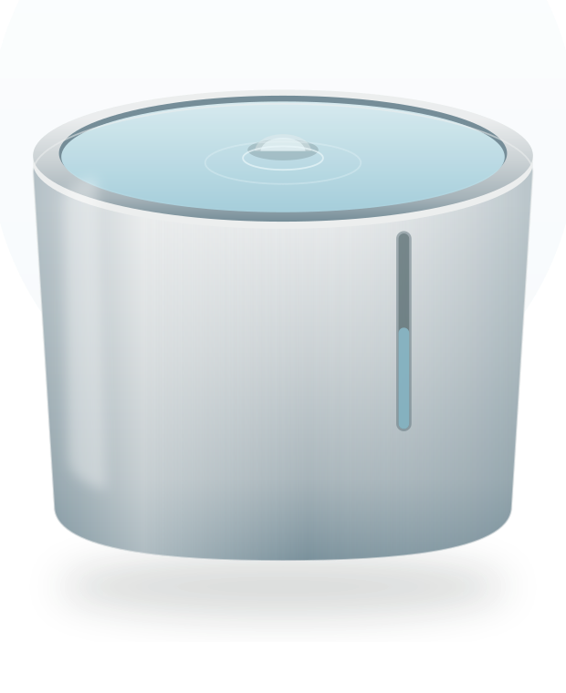

01
诚实优先
规格照实写，玩具扛不住什么就直说，绝不编造奖项、评论或紧俏来催你下单。
关于
Asiajoly 是一个小团队，为猫和狗设计经得起看的物件，与深圳和潮州的伙伴一同制造。

2024 年，我们从一个很小的别扭开始。多数宠物用品只有两种样子：像医疗设备的白色塑料，或者像儿童玩具的鲜艳造型。这两样都不属于一个连水壶、台灯和咖啡杯都精挑细选的家。我们相信猫和狗配得上同样的用心，于是开始做自己愿意摆在台面上的东西。
金属件和电子件来自深圳的伙伴，一座精于制造的城市。陶瓷来自潮州，那里做炻器已有很多个世纪。我们不拥有工厂，也不假装拥有。我们直接与工厂合作、去看厂，把在意的地方一点点磨出来：公差、釉面、安静的泵，以及真正能换的零件。
我们的客人大多租房，住在空间才是真正奢侈的城市里。所以我们从占地面积开始设计：能挨着水壶放的饮水机、不占台面的喂食器、能塞进层架下的碗。安静很重要，因为卧室和客厅常常是同一间。干净很重要，因为脏东西无处可藏。
我们做四个系列——Spring 饮水机、Feast 喂食器、Still 碗与垫、Play 玩具，外加 Care 的滤芯和泵。我们有意做少，把每件都设计成可拆、可洗、可修，而不是用完就扔。目标不是一本厚厚的产品册，而是一小组能用很多年的物件。
—— June，创始人
规格照实写，玩具扛不住什么就直说，绝不编造奖项、评论或紧俏来催你下单。
好的宠物物件该融入台面、运行安静、清洗省力，让宠物不喧宾夺主。
滤芯和泵是用来换的，不是换整机。我们宁可卖你一个零件，也不愿再卖你一台机器。